About the Veteran Games
A five-day programme of sport, conversation and culture for wounded, sick and injured veterans and their families.
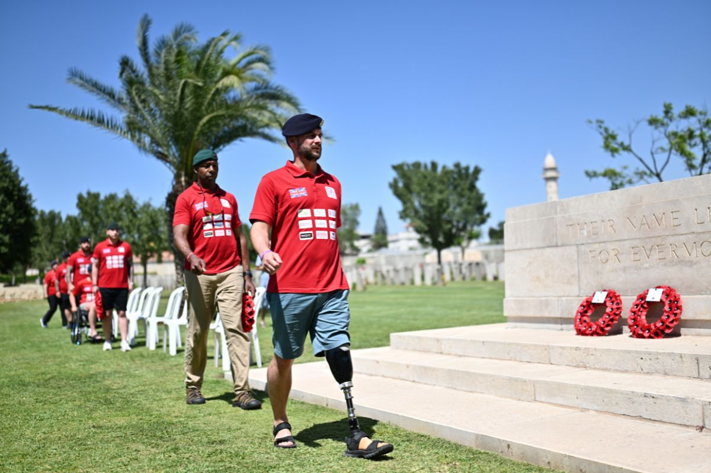
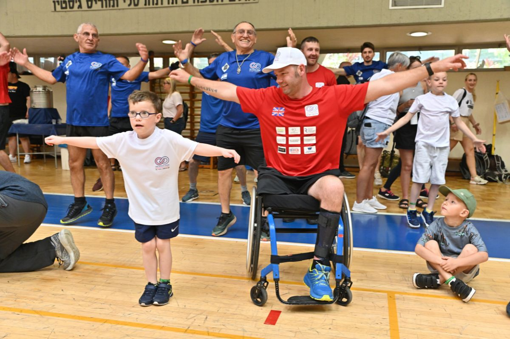
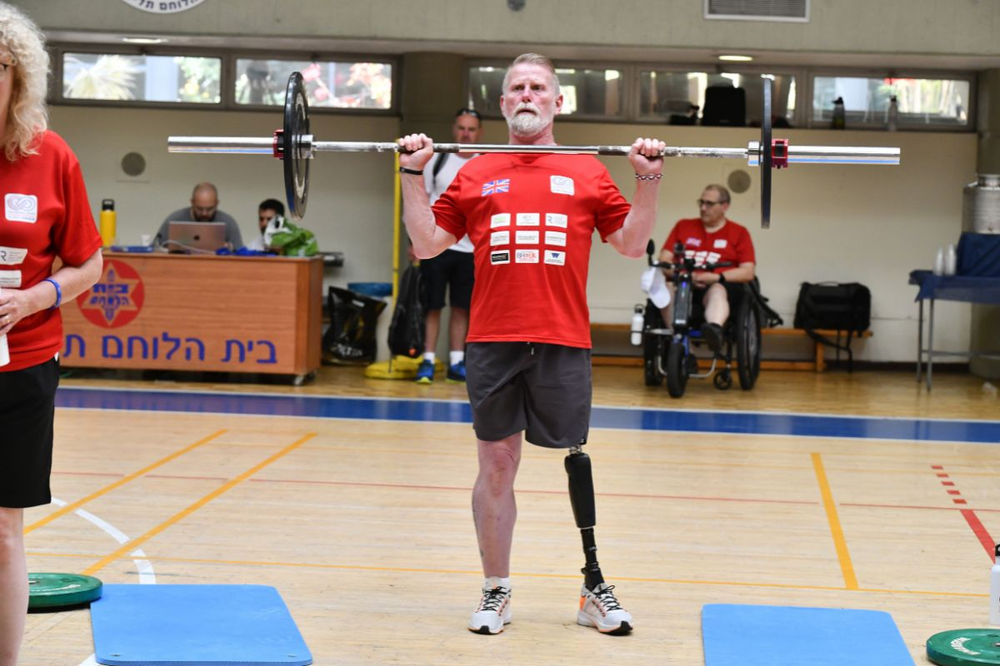
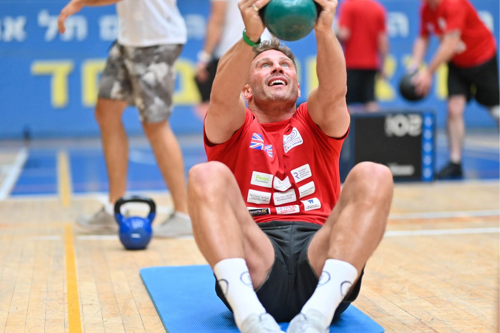
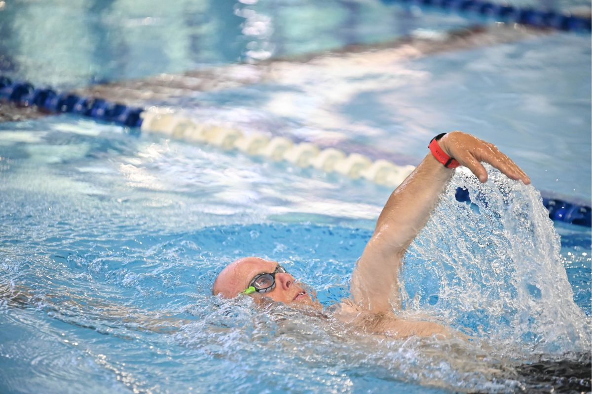
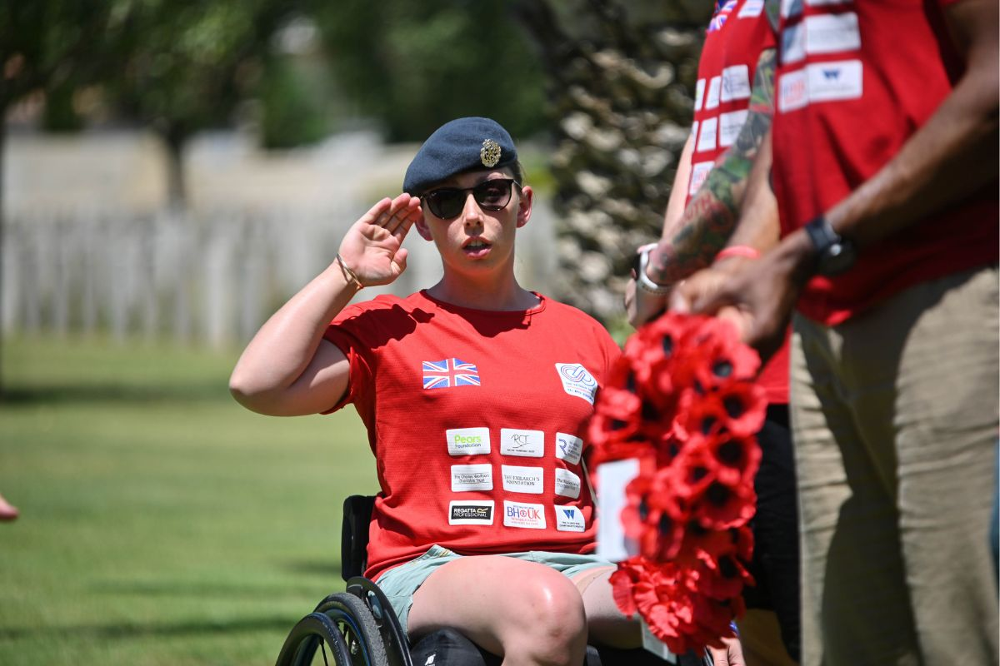
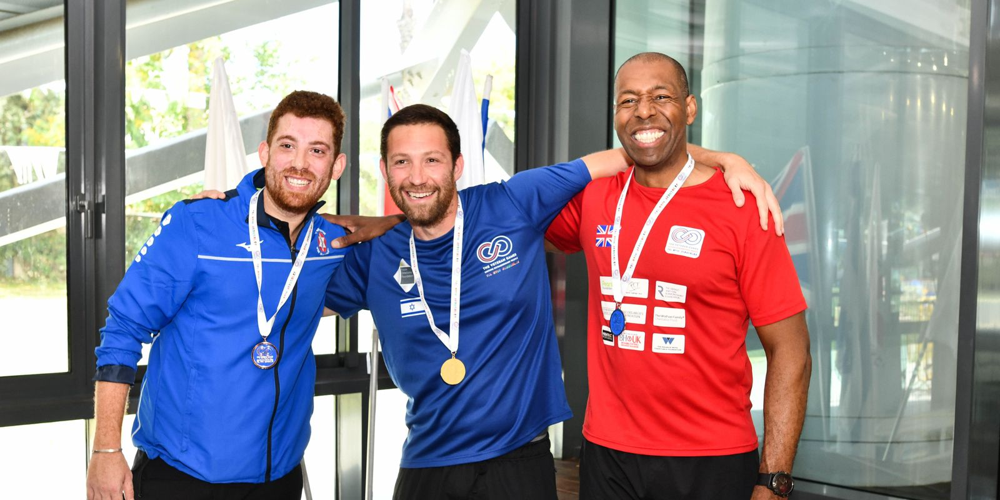
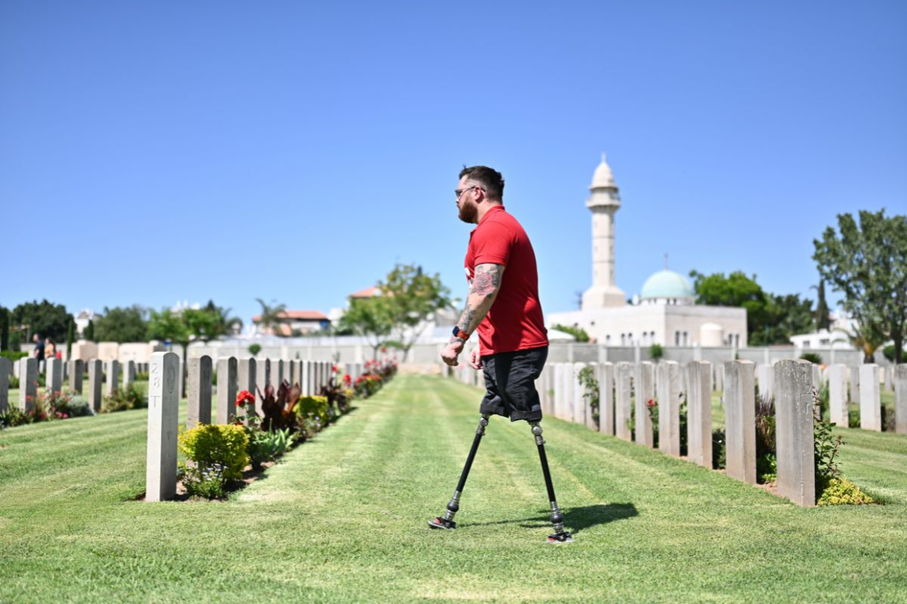
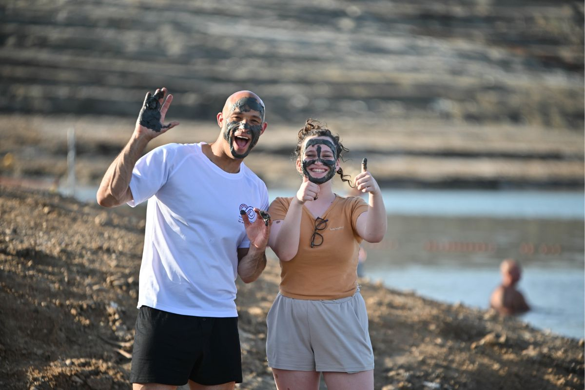
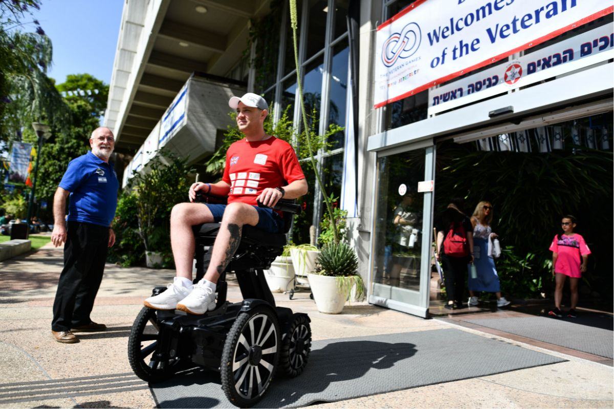
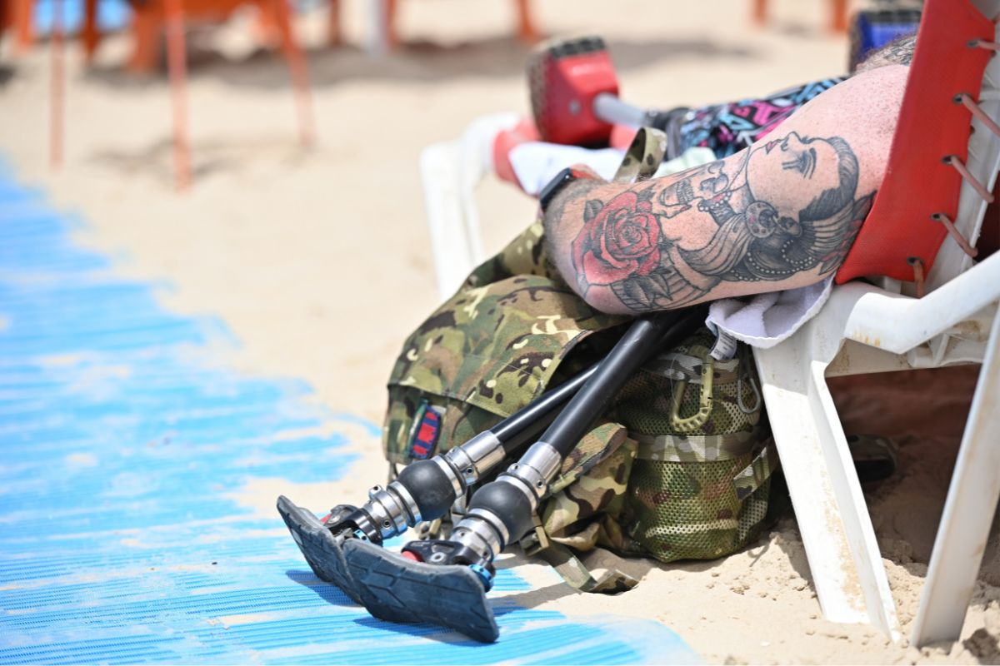
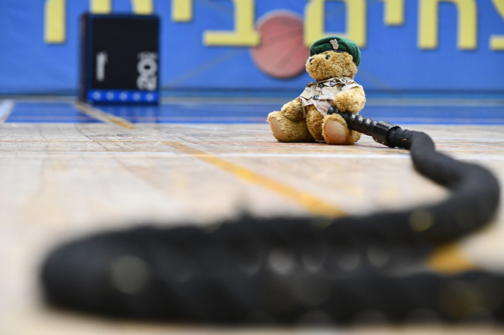
The Veteran Games and Conference is a programme that brings together 180 wounded, sick or injured UK Veterans and their families alongside their overseas counterparts. It was first conceived in 2018 and the inaugural event took place in the spring of 2019. The event proved phenomenally successful, so much so that the second event was held in 2022 and the third in 2023.
The Veteran Games is a five-day event based around a sports competition between wounded, sick and injured veterans from the UK and overseas. This sporting element provides the focus; however, it is augmented and complemented by a full and varied social and cultural programme. Inclusivity and family are key to the ethos of the Veteran Games, in recognition of the fundamental role played by sport and family in supporting the ongoing recovery of veterans who have suffered physical and psychological challenges as a result of serving their country. As such this event is the first of its kind. The inclusion in 2019 of Chelsea Football Club to run football coaching activities for the children of the veterans was a particular success.
The event draws UK veterans from across the Army, Royal Navy, Royal Air Force and Royal Marines and is backed by leading rehabilitation and Armed Forces charities who have selected beneficiaries to compete. These include Rock2Recovery, the Royal Air Force Benevolent Fund, The Not Forgotten Association, The Royal Marines Charity, Combat Stress, The Association of Jewish Ex-Servicemen and Women, Veterans Scotland, Felix Fund, SSAFA, Poppyscotland, Legion Scotland and Blind Veterans UK. The programme was also backed by Johnny Mercer MP, then Minister of State for Veterans’ Affairs.
The Games bring wounded, sick and injured veterans and the families of both participating nations together. Both groups of veterans already hold many common values and have encountered similar challenges in their personal and professional lives. By exploring their shared experiences, it is hoped that the veterans, together with their families, will take benefit from the sporting and social interaction on offer and form attachments based on mutual understanding.
The competition element of the Games has been designed to maximise participation. Inclusivity is key, and all veterans are strongly encouraged to take part in the activities on offer regardless of experience. This approach is supported by the deliberate absence of trials or any process of team selection. Team selection across the activities is guided by the preferences expressed by each veteran.
The social and cultural programme that runs alongside the competition gives the UK contingent the opportunity to sample a rich and vibrant culture, socialise with their overseas counterparts, and explore internationally renowned and historically significant locations and sights.
The Veteran Games initiative is funded entirely through the kind and generous donations of individuals and charitable foundations as well as from corporate sponsors.
Participants were referred by one of our partner UK veteran charities.
The Conference
In conjunction with the 2019 and 2022 Veteran Games, a Mental Health Conference was convened under the chairmanship of Sir Simon Wessely and Professor Zahava Solomon. The gathering of medical professionals was widely hailed as a success, uniting innovators in the mental health field and facilitating profound discussions on crucial issues. Cross-border collaboration of this kind is crucial in advancing our understanding of mental health support for veterans.
The 2022 Conference focused on three areas. Delegates first explored the historical evolution of civilian–military relationships, with a particular emphasis on the experiences of veterans. Second, the conference examined the present-day role of sport, exercise and competition in promoting veterans’ integration and rehabilitation, covering both physical rehabilitation and its implications for psychiatric rehabilitation. Finally, participants looked ahead to developments in service delivery and treatment innovation, with a specific focus on the evolving landscape of Post-Traumatic Stress Disorder (PTSD) care.
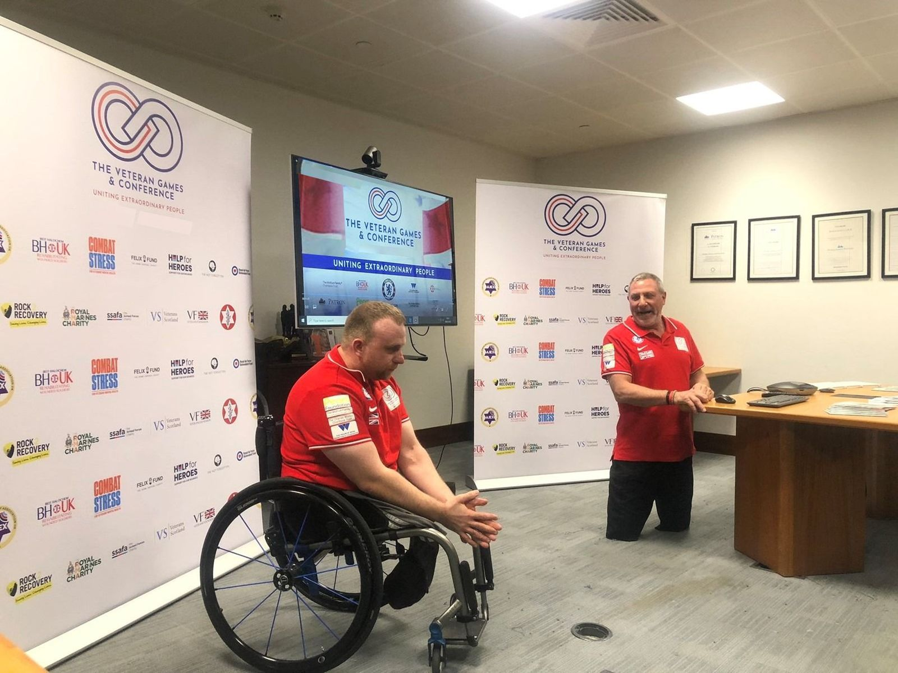
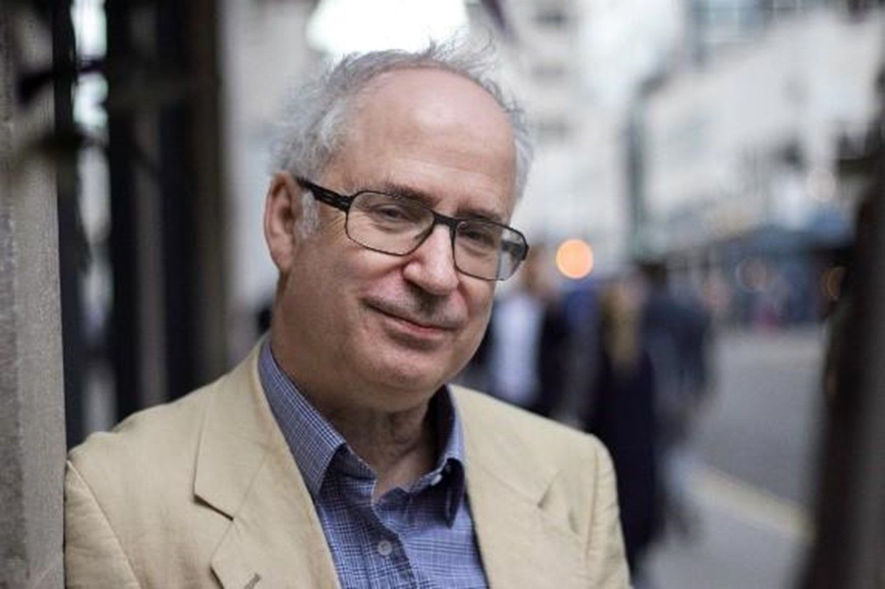